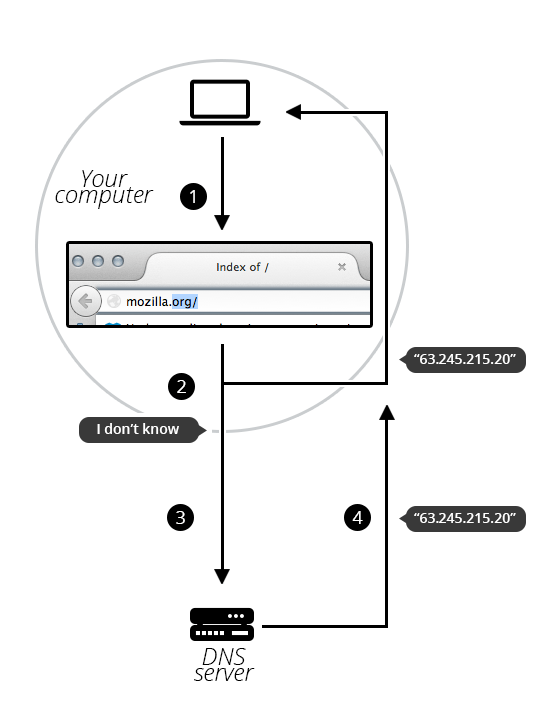

In this article we discuss domain names: what they are, how they are structured, and how to get one.
| Prerequisites: | First you need to know how the Internet works and understand what URLs are. |
|---|---|
| Objective: | Learn what domain names are, how they work, and why they are important. |
Summary
Domain names are a key part of the Internet infrastructure. They provide a human-readable address for any web server available on the Internet.
Any Internet-connected computer can be reached through a public IP Address, which consists of 32 bits for IPv4 (they are usually written as four numbers between 0 and 255, separated by dots (e.g., 173.194.121.32) or which consists of 128 bits for IPv6 (they are usually written as eight groups of 4 hexadecimal numbers, separated by colons (e.g., 2027:0da8:8b73:0000:0000:8a2e:0370:1337). Computers can handle those addresses easily, but people have a hard time finding out who's running the server or what service the website offers. IP addresses are hard to remember and might change over time. To solve all those problems we use human-readable addresses called domain names.
Active Learning
There is no active learning available yet. Please, consider contributing.
Deeper dive
Structure of domain names
A domain name has a simple structure made of several parts (it might be one part only, two, three...), separated by dots and read from right to left:

Each of those parts provides specific information about the whole domain name.
- TLD (Top-Level Domain).
- The TLD provides the most generic information. TLDs tell users the general purpose of the service behind the domain name. The most generic TLDs (.com, .org, .net) don't require web services to meet strict criteria, but some TLDs enforce stricter policies. For example, local TLDs such as .us, .fr, or .sh can require the service to be provided in a given language or hosted in a certain country.
- Label (or component)
- The labels are what follow the TLD. A label can be anything, from one letter to a full sentence. The label located right before the TLD can also be referred as a Secondary Level Domain (SLD). A domain name can have many labels (or components), it is not mandatory nor necessary to have 3 labels to form a domain name. For instance, www.inf.ed.ac.uk is a correct domain name. When controlling the "upper" part of a domain name (e.g. mozilla.org), one can create other domain names (sometimes called "subdomains") (e.g. developer.mozilla.org).
Buying a domain name
Who owns a domain name?
You cannot “buy a domain name”. You pay for the right to use a domain name for one or more years. You can renew your right, and your renewal has priority over other people's applications. But you never own the domain name.
Companies called registrars use domain name registries to keep track of technical and administrative information connecting you to your domain name.
Note : For some domain name, it might not be a registrar which is in charge of keeping track. For instance, every domain name under .fire is managed by Amazon.
Finding an available domain name
To find out whether a given domain name is available,
- Go to a domain name registrar's website. Most of them provide a “whois” service that tells you whether a domain name is available.
- Alternatively, if you use a system with a built-in shell, type a
whoiscommand into it, as shown here formozilla.org:
$ whois mozilla.org Domain Name:MOZILLA.ORG Domain ID: D1409563-LROR Creation Date: 1998-01-24T05:00:00Z Updated Date: 2013-12-08T01:16:57Z Registry Expiry Date: 2015-01-23T05:00:00Z Sponsoring Registrar:MarkMonitor Inc. (R37-LROR) Sponsoring Registrar IANA ID: 292 WHOIS Server: Referral URL: Domain Status: clientDeleteProhibited Domain Status: clientTransferProhibited Domain Status: clientUpdateProhibited Registrant ID:mmr-33684 Registrant Name:DNS Admin Registrant Organization:Mozilla Foundation Registrant Street: 650 Castro St Ste 300 Registrant City:Mountain View Registrant State/Province:CA Registrant Postal Code:94041 Registrant Country:US Registrant Phone:+1.6509030800
As you can see, I can't register mozilla.org because the Mozilla Foundation has already registered it.
On the other hand, let's see if I could register afunkydomainname.org:
$ whois afunkydomainname.org NOT FOUND
As you can see, the domain does not exist in the whois database (at the time of writing), so we could ask to register it. Good to know!
Getting a domain name
The process is quite straightforward:
- Go to a registrar's website.
- Usually there is a prominent “Get a domain name” call to action. Click on it.
- Fill out the form with all required details. Make sure especially that you have not misspelled your desired domain name. Once it's paid for, it's too late!
- The registrar will let you know when the domain name is properly registered. Within a few hours, all DNS servers will have received your DNS information.
Note: In this process the registrar asks you for your real-world address. Make sure you fill it properly, since in some countries registrars may be forced to close the domain if they cannot provide a valid address.
DNS refreshing
DNS databases are stored on every DNS server worldwide, and all these servers refer to a few ones called “authoritative name server” or “top-level DNS servers.” Whenever your registrar creates or updates any information for a given domain, the information must be refreshed in every DNS database. Each DNS server that knows about a given domain stores the information for some time before it is automatically invalidated and then refreshed (the DNS server queries an authoritative server again). Thus, it takes some time for DNS servers that know about this domain name to get the up-to-date information.
Note : This time is often called propagation time. However this term is not precise since the update is not propagating itself (top → down). DNS servers queried by your computer (down) are the ones that fetch the information from the authoritative server (top) when they need it.
How does a DNS request work?
As we already saw, when you want to display a webpage in your browser it's easier to type a domain name than an IP address. Let's take a look at the process:
- Type
mozilla.orgin your browser's location bar. - Your browser asks your computer if it already recognizes the IP address identified by this domain name (using a local DNS cache). If it does, the name is translated to the IP address and the browser negotiates contents with the web server. End of story.
- If your computer does not know which IP is behind the
mozilla.orgname, it goes on to ask a DNS server, whose job is precisely to tell your computer which IP address matches each registered domain name. - Now that the computer knows the requested IP address, your browser can negotiate contents with the web server.

Next steps
Okay, we talked a lot about processes and architecture. Time to move on.
- If you want to get hands-on, it's a good time to start digging into design and explore the anatomy of a web page.
- It's also worth noting that some aspects of building a website cost money. Please refer to how much it costs to build a web site.
- Or read more about Domain Name on Wikipedia.